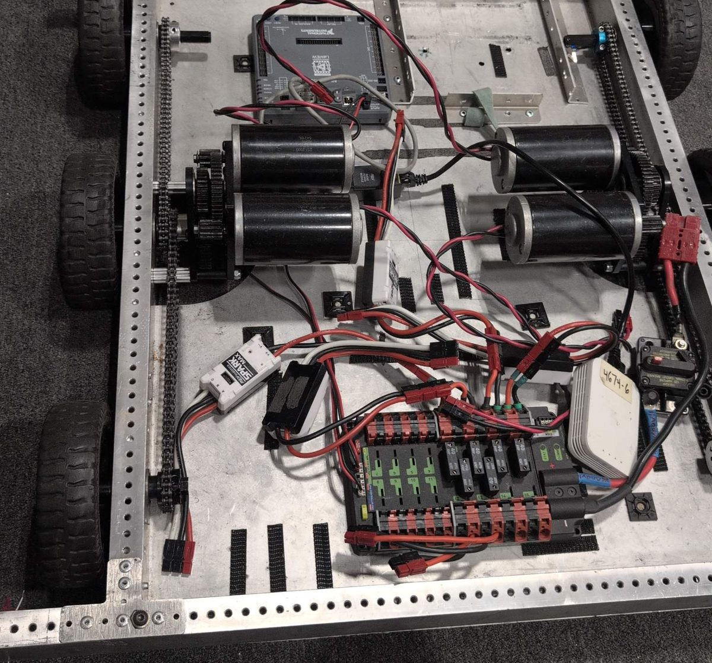

Lab 2: Drive a West Coast Drive#
Why it matters#
In Lab 1 you spun one motor. Now you'll drive a whole robot.
The drivetrain is the most important mechanism on any robot: if it can't drive well, nothing else matters. In this lab you'll program the team's West Coast Drive (WCD) so a driver can move it around with an Xbox controller. Along the way you'll learn three ideas every drivetrain uses:
- Leaders and followers: several motors acting as one
- Inversion: why one side of the robot has to run "backward"
- Skid steer driving: each joystick runs one side of the robot, just like the two levers on a skid steer loader
Before you start: finish Lab 1.1. Lesson 10 explains the drive code in more depth; read it before or after.
Read this#
Walkthrough#
What's a West Coast Drive?#
A WCD steers like a skid steer loader: the left wheels all move together, the right wheels all move together, and there's no steering. To turn, one side drives faster than the other, and the wheels skid sideways across the floor. That's where the name skid steer comes from.
- Each side has one gearbox with two CIM motors. Both CIMs turn the same gear, so they must always push in the same direction.
- The middle wheels sit slightly lower ("dropped center"), so the robot rocks onto fewer wheels and turns more easily.
The hardware#
| Part | Details |
|---|---|
| Motors | 4 CIM motors, 2 per side. CIMs are brushed motors. |
| Motor controllers | 4 SPARK MAXes, one per CIM, on CAN |
| CAN IDs | Left leader 1, left follower 2, right leader 3, right follower 4 (check yours, Step 1) |
| Breakers | 40 A, one per motor |
| Controller | An Xbox controller on the Driver Station laptop |

The RoboJacks West Coast Drive chassis, before the elevator goes on. Front is at the top of the photo.
Find each of these on the real chassis before you write any code:
| In the photo | What it is |
|---|---|
| Gray box near the top | The roboRIO, where your code runs |
| Four black motors in the middle | The drive motors, two on each side, each pair driving one gearbox |
| Chains along the left and right edges | Connect each gearbox to that side's three wheels, so all three turn together |
| Black and red board at the bottom | The Power Distribution Hub, with one breaker per motor |
| White box labeled 4674-6 | The radio: the Driver Station connects to the robot through it |
| Breaker with a red button, bottom right | The main breaker: press the red button to turn off all power |
| White box labeled SPARK MAX | A SPARK MAX motor controller |
Trace the wires from one motor to its SPARK MAX, and from the SPARK MAX to its breaker on the Power Distribution Hub. Knowing which controller drives which motor makes Step 1 much easier.
CIMs are brushed motors
Every SPARK MAX in this lab must be set up as MotorType.kBrushed. The wrong motor type can damage the motor and the controller. This is the opposite of Lab 1's NEO, so read that line twice.
New project#
The WCD is its own robot with its own roboRIO, so it gets its own project. Repeat Lab 0, Parts 2 to 4, but name the project WestCoastDrive. Remember to install REVLib.
Then copy the telemetry folder from your TestBed project (Lab 1.1) into the new project's frc/robot folder, next to Robot.java. (It's also on GitHub.) Every subsystem uses it to send values to Elastic.
Step 1: Check the SPARK MAXes#
- Connect each SPARK MAX to your laptop over USB-C and open the REV Hardware Client.
- Write down each one's CAN ID and which motor it drives (left front, left back, and so on). Put tape labels on the controllers.
- Pick one controller on each side as the leader. The other is its follower.
- Check that no two SPARK MAXes share an ID. A duplicate makes motors twitch or not respond (Lesson 4).
Step 2: Constants#
Open Constants.java and add a class for the drivetrain. Use the CAN IDs you wrote down.
public final class Constants {
public static class OperatorConstants {
public static final int kControllerPort = 0;
public static final double kDeadband = 0.08; // ignore tiny stick movements
}
public static class kDriveConstants {
public static final int LeftLeaderCanId = 1;
public static final int LeftFollowerCanId = 2;
public static final int RightLeaderCanId = 3;
public static final int RightFollowerCanId = 4;
public static final int CurrentLimit = 40; // amps, matches the 40 A breakers
public static final double MaxOutput = 0.5; // top speed, 0 to 1. Start slow!
}
}
MaxOutput caps the robot at 50% speed. Raise it only after the robot drives correctly.
Step 3: Leaders and followers#
Each side has two motors in one gearbox. Instead of sending every command to both, you send commands to the leader, and tell the follower to copy it.
| Leader | Follower | |
|---|---|---|
| Your code tells it | The speed to run | Just "follow the leader" |
| What it does | Runs at that speed | Matches the leader's output automatically |
Following happens on the SPARK MAXes themselves, so the code only ever talks to two motors: left leader and right leader.
Step 4: Why one side is inverted#
The left and right gearboxes face opposite directions. If you send "forward" to both sides, the left wheels roll forward and the right wheels roll backward, and the robot spins in place.
The fix is to invert one side's leader, so "forward" means forward on both. We'll invert the right side. If your robot drives backward or spins when you push forward, you'll invert the other side instead (Step 8).
Step 5: The drive subsystem#
Create subsystems/DriveSubsystem.java (right-click subsystems → Create a new class/command → Subsystem (New)). Replace its contents:
package frc.robot.subsystems;
import java.util.function.DoubleSupplier;
import com.revrobotics.PersistMode;
import com.revrobotics.ResetMode;
import com.revrobotics.spark.SparkLowLevel.MotorType;
import com.revrobotics.spark.SparkMax;
import com.revrobotics.spark.config.SparkBaseConfig.IdleMode;
import com.revrobotics.spark.config.SparkMaxConfig;
import edu.wpi.first.wpilibj.RobotController;
import edu.wpi.first.wpilibj.drive.DifferentialDrive;
import edu.wpi.first.wpilibj2.command.Command;
import edu.wpi.first.wpilibj2.command.SubsystemBase;
import frc.robot.Constants.kDriveConstants;
import frc.robot.telemetry.Telemetry;
import frc.robot.telemetry.TelemetryTable;
public class DriveSubsystem extends SubsystemBase {
// Four SPARK MAXes, all BRUSHED, because CIMs are brushed motors.
private final SparkMax m_leftLeader =
new SparkMax(kDriveConstants.LeftLeaderCanId, MotorType.kBrushed);
private final SparkMax m_leftFollower =
new SparkMax(kDriveConstants.LeftFollowerCanId, MotorType.kBrushed);
private final SparkMax m_rightLeader =
new SparkMax(kDriveConstants.RightLeaderCanId, MotorType.kBrushed);
private final SparkMax m_rightFollower =
new SparkMax(kDriveConstants.RightFollowerCanId, MotorType.kBrushed);
// DifferentialDrive is WPILib's class for any drivetrain with a left side and a right side.
// We only hand it the two leaders. The followers copy them.
private final DifferentialDrive m_drive =
new DifferentialDrive(m_leftLeader::set, m_rightLeader::set);
// Everything this subsystem sends shows up under "Drive" in Elastic
private final TelemetryTable m_telemetry = Telemetry.getTable("Drive");
public DriveSubsystem() {
// Left leader: normal direction
SparkMaxConfig leftLeaderConfig = baseConfig();
// Left follower: copy the left leader
SparkMaxConfig leftFollowerConfig = baseConfig();
leftFollowerConfig.follow(kDriveConstants.LeftLeaderCanId);
// Right leader: inverted, because the right gearbox faces the other way
SparkMaxConfig rightLeaderConfig = baseConfig();
rightLeaderConfig.inverted(true);
// Right follower: copy the right leader
SparkMaxConfig rightFollowerConfig = baseConfig();
rightFollowerConfig.follow(kDriveConstants.RightLeaderCanId);
m_leftLeader.configure(leftLeaderConfig, ResetMode.kResetSafeParameters, PersistMode.kPersistParameters);
m_leftFollower.configure(leftFollowerConfig, ResetMode.kResetSafeParameters, PersistMode.kPersistParameters);
m_rightLeader.configure(rightLeaderConfig, ResetMode.kResetSafeParameters, PersistMode.kPersistParameters);
m_rightFollower.configure(rightFollowerConfig, ResetMode.kResetSafeParameters, PersistMode.kPersistParameters);
// Cap the top speed while we're learning. Raise this in Constants later.
m_drive.setMaxOutput(kDriveConstants.MaxOutput);
}
/** Settings every drive motor shares. */
private static SparkMaxConfig baseConfig() {
SparkMaxConfig config = new SparkMaxConfig();
config.smartCurrentLimit(kDriveConstants.CurrentLimit); // protects motors and breakers
config.idleMode(IdleMode.kBrake); // stop quickly when sticks are released
return config;
}
/**
* Differential drive with two sticks: one value for the left side, one for the right.
* Suppliers are read every loop, so the robot follows the sticks as they move.
*/
public Command differentialDriveCommand(DoubleSupplier leftSpeed, DoubleSupplier rightSpeed) {
return run(() -> m_drive.tankDrive(leftSpeed.getAsDouble(), rightSpeed.getAsDouble()))
.withName("Differential Drive");
}
@Override
public void periodic() {
m_telemetry.log("Left Output", m_leftLeader.getAppliedOutput());
m_telemetry.log("Right Output", m_rightLeader.getAppliedOutput());
m_telemetry.log("Left Leader Current (A)", m_leftLeader.getOutputCurrent());
m_telemetry.log("Left Follower Current (A)", m_leftFollower.getOutputCurrent());
m_telemetry.log("Right Leader Current (A)", m_rightLeader.getOutputCurrent());
m_telemetry.log("Right Follower Current (A)", m_rightFollower.getOutputCurrent());
m_telemetry.log("Battery (V)", RobotController.getBatteryVoltage());
}
}
The drive subsystem, piece by piece#
1. Four motor controllers, all brushed#
private final SparkMax m_leftLeader =
new SparkMax(kDriveConstants.LeftLeaderCanId, MotorType.kBrushed);
private final SparkMax m_leftFollower =
new SparkMax(kDriveConstants.LeftFollowerCanId, MotorType.kBrushed);
// ...and the same for the right leader and right follower
One SparkMax object for each SPARK MAX on the robot, each with its own CAN ID from Constants. They're MotorType.kBrushed because CIMs are brushed motors. (Lab 1's NEO was kBrushless.)
Notice the import at the top: import frc.robot.Constants.kDriveConstants;. Importing the inner class lets you write kDriveConstants.LeftLeaderCanId instead of Constants.kDriveConstants.LeftLeaderCanId.
2. The DifferentialDrive#
private final DifferentialDrive m_drive =
new DifferentialDrive(m_leftLeader::set, m_rightLeader::set);
DifferentialDrive is WPILib's class for any robot with a left side and a right side. It does the math for driving, and it has a safety feature: if your code stops sending it speeds, it stops the motors.
| Part | What it means |
|---|---|
m_leftLeader::set |
A method reference: "to set the left side's speed, call m_leftLeader.set(...)." It's a shorter way to write the lambda speed -> m_leftLeader.set(speed). |
| Only the two leaders | The followers copy their leaders on their own, so DifferentialDrive never needs to know about them |
3. The telemetry table#
private final TelemetryTable m_telemetry = Telemetry.getTable("Drive");
Everything this subsystem sends goes in Telemetry → Drive in Elastic (Lab 1.1).
4. The constructor: one config per motor#
SparkMaxConfig leftLeaderConfig = baseConfig();
SparkMaxConfig leftFollowerConfig = baseConfig();
leftFollowerConfig.follow(kDriveConstants.LeftLeaderCanId);
SparkMaxConfig rightLeaderConfig = baseConfig();
rightLeaderConfig.inverted(true);
SparkMaxConfig rightFollowerConfig = baseConfig();
rightFollowerConfig.follow(kDriveConstants.RightLeaderCanId);
Each motor controller gets its own settings. All four start from baseConfig() (piece 5), then:
| Motor | Extra setting | Why |
|---|---|---|
| Left leader | None | It runs normally |
| Left follower | follow(LeftLeaderCanId) |
"Copy whatever the controller with this CAN ID does." Following happens on the SPARK MAXes themselves, over CAN. |
| Right leader | inverted(true) |
The right gearbox faces the other way, so this flips it. Now "forward" is forward on both sides (Step 4). |
| Right follower | follow(RightLeaderCanId) |
Copies the right leader, including its inversion |
m_leftLeader.configure(leftLeaderConfig, ResetMode.kResetSafeParameters, PersistMode.kPersistParameters);
// ...and the same for the other three
m_drive.setMaxOutput(kDriveConstants.MaxOutput);
configure(...) sends each set of settings to its SPARK MAX, the same way as Lab 1. Then setMaxOutput(0.5) tells DifferentialDrive to scale every output down to at most 50%, so full stick is only half speed while you're learning.
5. Shared settings in one place#
private static SparkMaxConfig baseConfig() {
SparkMaxConfig config = new SparkMaxConfig();
config.smartCurrentLimit(kDriveConstants.CurrentLimit);
config.idleMode(IdleMode.kBrake);
return config;
}
All four motors need the same current limit and brake mode. Instead of writing those lines four times, this helper method builds a config with them and returns it. Each call makes a brand-new config, so changing one motor's config (like inverting it) doesn't change the others.
private: only this class uses it.static: it doesn't use any of the subsystem's fields, so it doesn't need an object to run.
6. The drive command#
public Command differentialDriveCommand(DoubleSupplier leftSpeed, DoubleSupplier rightSpeed) {
return run(() -> m_drive.tankDrive(leftSpeed.getAsDouble(), rightSpeed.getAsDouble()))
.withName("Differential Drive");
}
| Part | What it means |
|---|---|
DoubleSupplier leftSpeed |
Not a number, but something you can ask for a number, any time, with getAsDouble(). Here, it will read the joystick. |
run(...) |
A command that runs its code every loop (every 20 ms) until something stops it. Like startEnd, it requires the subsystem. |
m_drive.tankDrive(left, right) |
Sends one speed to the left side and one to the right, each from -1 (full backward) to 1 (full forward) |
Why a DoubleSupplier instead of a plain double? A double would be read once, when the command is created, and the robot would drive at that one speed forever. A supplier is read every loop, so the robot follows the sticks as they move.
7. Sending values to the dashboard#
@Override
public void periodic() {
m_telemetry.log("Left Output", m_leftLeader.getAppliedOutput());
m_telemetry.log("Left Leader Current (A)", m_leftLeader.getOutputCurrent());
m_telemetry.log("Battery (V)", RobotController.getBatteryVoltage());
// ...
}
periodic() runs every 20 ms, enabled or not. @Override means "this replaces the empty periodic() that SubsystemBase already has." The values let you check the robot without guessing: each side's output, every motor's current, and the battery voltage.
Step 6: Skid steer controls#
If you've ever run a skid steer loader, you already know how to drive this robot. A skid steer has two levers: the left lever runs the left wheels and the right lever runs the right wheels. Push both forward to go straight, push one further to turn, and push them opposite ways to spin in place.
The Xbox controller's two sticks are the two levers. In code, WPILib calls this kind of drivetrain a differential drive, and this control style tank drive.
| Stick | Controls |
|---|---|
| Left stick, up and down | Left side wheels |
| Right stick, up and down | Right side wheels |
| To do this | Push the sticks (like skid steer levers) |
|---|---|
| Drive straight forward | Both forward, the same amount |
| Turn gently right | Left stick a little more than the right |
| Spin in place to the right (a skid steer's "counter-rotate") | Left stick forward, right stick back |
| Stop | Let go of both |
m_drive.tankDrive(left, right) sends those two values straight to the two sides. It also squares them by default, which gives finer control at low speed: half stick gives about a quarter of full speed (Lesson 10).
Rename the template's controller first
The WPILib template names the controller m_driverController, and its port kDriverControllerPort. This course calls them m_controller and kControllerPort. In VS Code, click on m_driverController, press F2 (Rename Symbol), and type m_controller. Do the same for kDriverControllerPort → kControllerPort. F2 renames every use at once, so nothing breaks.
Open RobotContainer.java. Add the imports and create the subsystem:
import edu.wpi.first.math.MathUtil;
import frc.robot.subsystems.DriveSubsystem;
private final DriveSubsystem m_driveSubsystem = new DriveSubsystem();
Then set the drive's default command in configureBindings():
private void configureBindings() {
// Left stick drives the left side, right stick drives the right side,
// whenever no other command is using the drivetrain
m_driveSubsystem.setDefaultCommand(
m_driveSubsystem.differentialDriveCommand(
() -> -MathUtil.applyDeadband(m_controller.getLeftY(), OperatorConstants.kDeadband),
() -> -MathUtil.applyDeadband(m_controller.getRightY(), OperatorConstants.kDeadband)));
}
| Piece | Why |
|---|---|
setDefaultCommand |
The drive command runs all the time, unless another command takes over the drivetrain |
() -> ... |
A lambda: read the stick every loop, not just once (Lesson 3) |
getLeftY() and getRightY() |
The up-and-down axis of each stick |
| The minus signs | Xbox sticks report pushing forward as negative. WPILib wants forward to be positive. |
applyDeadband |
A stick resting in the middle rarely reads exactly 0. Without a deadband, the robot creeps. |
Delete or comment out the template's example subsystem and its auto in getAutonomousCommand() if you like; for now, make it return null so autonomous does nothing:
public Command getAutonomousCommand() {
return null; // no autonomous yet
}
Step 7: First drive, on blocks#
Wheels off the ground first
The first time new drive code runs, put the robot on blocks so all six wheels are off the ground. A drivetrain with a wrong sign can lurch or spin the moment it's enabled.
Everyone stands clear. One person drives, one person watches the wheels, and the driver keeps a finger near Enter (disable).
- Build and Deploy.
- Plug in the Xbox controller and check it's in slot 0 on the Driver Station USB tab.
- Say "Enabling!" and enable TeleOperated.
- Gently push one stick at a time, then both together.
Check every row:
| You do | Should happen | If not |
|---|---|---|
| Nothing (sticks centered) | All wheels still | Raise kDeadband a little |
| Left stick forward | Only the left three wheels roll forward | See Step 8 |
| Right stick forward | Only the right three wheels roll forward | See Step 8 |
| Both sticks forward | All six wheels roll forward | See Step 8 |
| Both sticks back | All six wheels roll backward | See Step 8 |
| Left forward, right back | Left wheels forward, right wheels backward | See Step 8 |
| Let go | Everything stops | Check the default command is set |
Listen to the gearboxes
If a gearbox grinds, buzzes, or hums without the wheels turning, or a breaker trips right away, disable immediately. It usually means a leader and follower are pushing against each other in the same gearbox. Check that the follower is set to follow the correct leader's CAN ID, and look at the dashboard: a follower drawing current while its side barely moves is the giveaway.
Step 8: Fixing directions#
Change one thing at a time, deploy, and test again on blocks.
| What you see | Fix |
|---|---|
| One side rolls backward when its stick goes forward | That side's direction is flipped. If it's the right side, remove inverted(true) from the right leader. If it's the left, add inverted(true) to the left leader. |
| Both sides roll backward when both sticks go forward | Move inverted(true) from the right leader to the left leader, or check both minus signs |
| The left stick moves the right wheels | The left and right CAN IDs are swapped in Constants. Swap them back. |
| One side doesn't move at all | That side's leader CAN ID is wrong, or its breaker is tripped |
| A gearbox grinds or a breaker trips | Leader and follower are fighting. Check the follow CAN IDs. |
Nothing moves, and the console repeats [Spark Max] IDs: 1, timed out while waiting for Period Status 0: HAL: CAN Receive has Timed Out and Setpoint command: Unknown error status |
The roboRIO can't hear that SPARK MAX on CAN. Check, in order: the yellow and green CAN wires aren't swapped (yellow to H, green to L, especially at the roboRIO); the controller's CAN ID in the REV Hardware Client matches Constants; it has power; the CAN chain is connected all the way to the PDH, with TERM on (Lesson 4). |
Step 9: Drive on the floor#
Once every row in Step 7 passes on blocks:
- Put the robot on the floor in a big open space, with nobody in front of it.
- Keep
MaxOutputat 0.5. - Drive slowly: forward, backward, gentle turns, then a figure eight.
- Watch Elastic while you drive (put the currents and battery voltage on Graph widgets). Look at the current on each side when you start moving and when you turn in place.
Spinning in place usually pulls the most current, because the wheels have to skid sideways across the carpet, the same reason a skid steer tears up a lawn when it turns. Watch the battery voltage drop while you do it. That's where brownouts come from (Lesson 4).
Step 10: Commit#
git add .
git commit -m "Lab 2: differential drive on the WCD"
Finished code
Stuck, or missed a lab? lab02-west-coast-drive on GitHub is the complete project as it looks at the end of this lab. It's a full WPILib 2026 project you can open in VS Code, build, and deploy. Try to finish the lab yourself first.
Try it#
- Get every row in the Step 7 table to pass on blocks
- Drive a figure eight on the floor at 50% max output
- Add slow mode: while the right bumper is held, multiply both stick values by 0.4. (Hint:
m_controller.rightBumper().getAsBoolean()inside the lambdas.) - Drive a straight line across the room. Is it hard to push both sticks exactly the same? What could the code do to help?
- Change
IdleMode.kBraketoIdleMode.kCoastfor all motors. How does stopping feel different? Which would a driver want? - Raise
MaxOutputto 0.75 and watch the battery voltage while turning in place - Challenge: some WCDs have 3 CIMs per side. What would you add to support a third motor on each side?
Check yourself#
Why are the CIMs set to kBrushed when Lab 1's motor was kBrushless?
CIMs are brushed motors and NEOs are brushless. The SPARK MAX drives them completely differently, and the setting must match the motor.
What does a follower do, and why do we use them?
It copies its leader's output. Both motors in a gearbox must always push together, so the code only commands the leader and the follower matches it automatically.
Why is one side of the drivetrain inverted?
The two gearboxes face opposite directions. Without inverting one side, "forward" on both would spin the robot in place.
How does a skid steer (or this robot) turn without steering wheels?
It runs the left and right sides at different speeds, and the wheels skid sideways. The faster side swings around the slower one. Running them in opposite directions spins the robot in place.
What does tankDrive(left, right) do with the two stick values?
It sends the left value to the left side and the right value to the right side, after squaring them for finer control at low speed.
Why do we negate getLeftY() and getRightY()?
Xbox controllers report pushing a stick forward as a negative number, and WPILib expects forward to be positive.
Why do the stick values go in lambdas (() -> ...)?
So they're read every loop. A plain number would be read once at startup, and the robot would never respond to the sticks again.
A gearbox buzzes and gets hot, but the wheels barely turn. What's wrong, and what do you do?
Disable immediately. The two motors in that gearbox are pushing against each other, usually because a follower is following the wrong leader or is set to the opposite direction.
Why put the robot on blocks for the first test?
If a direction or sign is wrong, the robot could lurch or spin into someone. On blocks, you can see every wheel's direction safely.